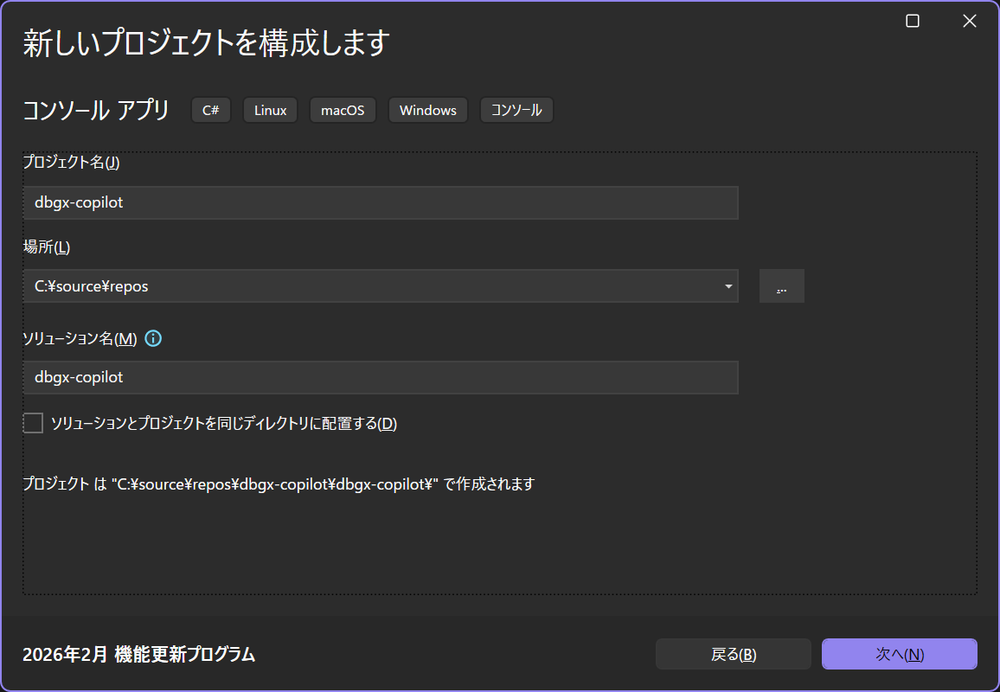
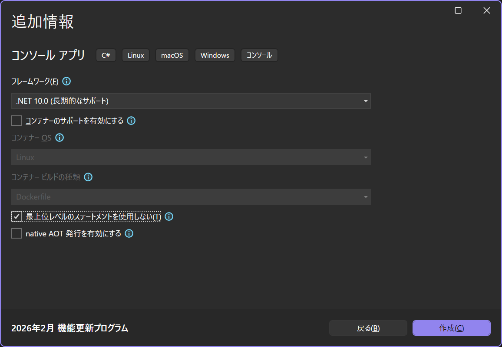
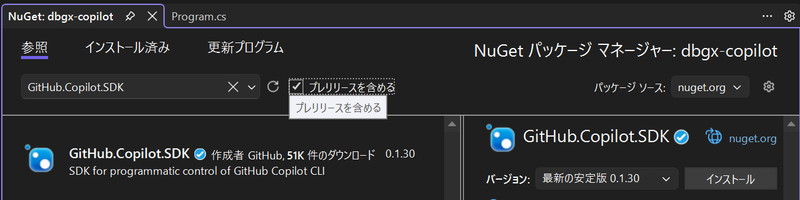

こんにちは、Japan Developer Support Core チームの松井です。GitHub Copilot はエージェント モードの登場により、コード補完や質問への回答といった領域のタスクだけでなく、IDE やエディター上での AI による高度な作業の自動化が可能になっています。一方で、「AI の能力を IDE 上で使用するだけでなく自分のアプリケーションに組み込みたい」「高度な自動化・並列化を伴うエージェント ワークフローを構築したい」「権限やデータの取り扱いを自前で制御したい」といったニーズに応えることは難しい場合があります。GitHub Copilot SDK を使用するとこういったニーズに対応することが可能になります。本記事では、WinDbgX のデバッガー エンジンを "ツール" として実装し、自然言語で対話的にデバッグ情報を取得できるコンソール アプリケーションの実装を例として紹介します。なお、本記事の執筆時点で GitHub Copilot SDK はテクニカル プレビューの段階であり、GA に至るまでに変更される可能性があります。また、Microsoft のサポート チームでは GitHub Copilot SDK に関するサポートは提供していないため、あくまでも参考として本記事をご覧いただけると幸いです。
GitHub Copilot SDK について GitHub Copilot SDK は、GitHub Copilot の機能を自分のアプリケーションやサービスから利用できるようにするための SDK です。GitHub Copilot の機能は既に GitHub Copilot CLI としてコマンド ライン ツールで提供されていますが、Copilot SDK は CLI と同じエンジンをアプリケーションからの呼び出しのために公開しています。例えば、Copilot SDK を使用することで、アプリケーション開発者は AI モデルへのメッセージの送信とレスポンスの受信といった基本的な操作の他、ツール呼び出しの管理、フックといった様々な操作を行うことができます。最新の情報やサンプル プログラムについては GitHub Copilot SDK のリポジトリや GitHub のブログ記事などを参照してください。
参考情報
前提条件 本記事の手順を実施するには、以下の準備が必要です。
Visual Studio 2026 以降 + .NET デスクトップ開発のワークロード
GitHub Copilot CLI のインストールとセットアップ
GitHub Copilot のサブスクリプション
インターネット接続
ステップ 1: GitHub Copilot SDK を使用したチャット部分の実装 まずは、GitHub Copilot SDK を使用して、ユーザーからの自然言語のリクエストを受け取って AI との対話を行うチャット部分の実装を行います。
Visual Studio 2026 を起動し、新しいコンソール アプリケーションの作成を進めます。本記事では名前を "dbgx-copilot" としておきますが、任意の名前で構いません。

プロジェクトの追加情報としてターゲット フレームワークを ".NET 10.0" に設定し、"最上位レベルのステートメントを使用しない" オプションを有効にしてプロジェクトを作成します。

プロジェクトが作成されたら、NuGet パッケージ マネージャーから GitHub.Copilot.SDK パッケージをインストールします。これにより、GitHub Copilot SDK をプロジェクト内で使用できるようになります。

同様に、Nuget パッケージ マネージャーから Microsoft.Extensions.Logging.Debug パッケージもインストールします。このパッケージのインストールは必須ではありませんが、GitHub Copilot SDK のログをデバッグ出力するために使用します。動作を理解したり、問題が発生した際のトラブルシューティングに役立ちます。
Program.cs を開き、GitHub Copilot SDK を使用してユーザーからの入力を受け取り、AI との対話を行う基本的なコードを実装します。
コード (Program.cs)
1 2 3 4 5 6 7 8 9 10 11 12 13 14 15 16 17 18 19 20 21 22 23 24 25 26 27 28 29 30 31 32 33 34 35 36 37 38 39 40 41 42 43 44 45 46 47 48 49 50 51 52 53 54 55 56 57 58 59 60 61 62 63 64 65 66 67 68 69 70 71 72 73 74 75 76 77 78 79 80 81 82 83 84 85 86 87 88 89 90 91 92 93 94 95 96 97 98 99 100 101 102 103 104 105 106 107 108 109 110 111 112 113 114 115 116 117 118 119 120 121 122 123 124 125 126 127 128 129 130 131 132 133 134 135 136 137 138 139 140 141 142 143 144 145 146 147 148 149 150 151 152 153 154 155 156 157 158 159 160 161 162 163 164 165 166 167 168 169 170 171 172 173 174 175 176 177 178 179 180 181 182 183 184 185 186 187 188 189 190 191 192 193 194 195 196 197 198 199 200 201 202 203 204 205 206 207 208 209 210 211 212 213 214 using GitHub.Copilot.SDK;using Microsoft.Extensions.AI;using Microsoft.Extensions.Logging;using System.ComponentModel;using System.Diagnostics;using System.Reflection;using System.Runtime.InteropServices;using System.Text.Json;using System.Text.RegularExpressions;namespace DbgXCopilot ;internal class Program { static readonly string _systemMessage = """ あなたは WinDbgX のデバッガー エンジンを使用してアプリケーションの問題を診断するエージェントです。 ダンプ ファイルや Time Travel Debugging トレースを分析し、原因の特定、解決策の提案を行います。 また、トラブルシュートやデバッグに関する一般的な質問や相談にも答えます。 あなたの応答はコンソールに表示されますので、表示されない可能性がある文字は使用しません。 """ ; static async Task Main (string [] args { using var loggerFactory = LoggerFactory.Create(builder => builder .AddDebug() .SetMinimumLevel(LogLevel.Trace)); try { await RunAsync(loggerFactory); } finally { Console.ResetColor(); } } private static async Task RunAsync (ILoggerFactory loggerFactory ) { CopilotClientOptions options = new () { Logger = loggerFactory.CreateLogger<CopilotClient>() }; await using CopilotClient client = new (options); await client.StartAsync(); if (!await LoginIfNeeded(client)) { Console.WriteLine("GitHub アカウントでのログインに失敗しました。" ); return ; } SessionConfig sessionConfig = new () { SystemMessage = new () { Content = _systemMessage }, Model = await SelectModelAsync(client), Tools = [ AIFunctionFactory.Create(EndConversation), ], OnPermissionRequest = PromptPermission, }; await using var session = await client.CreateSessionAsync(sessionConfig); TaskCompletionSource done = new (); session.On(evt => { switch (evt) { case AssistantMessageEvent msg: if (!string .IsNullOrEmpty(msg.Data.Content)) { Console.ForegroundColor = ConsoleColor.Cyan; Console.WriteLine($"\n[アシスタント]\n{msg.Data.Content} " ); Console.ResetColor(); } break ; case SessionIdleEvent: done.TrySetResult(); break ; } }); await session.SendAsync(new MessageOptions { Prompt = "挨拶して、あなたができることを簡潔に説明してください。" }); await done.Task; while (!exitRequested) { done = new TaskCompletionSource(); Console.ForegroundColor = ConsoleColor.White; Console.WriteLine("\n[プロンプト]" ); Console.ResetColor(); string ? userPrompt = Console.ReadLine(); await session.SendAsync(new MessageOptions { Prompt = userPrompt! }); await done.Task; } } private static async Task<bool > LoginIfNeeded (CopilotClient client ) { var authStatus = await client.GetAuthStatusAsync(); if (!authStatus.IsAuthenticated) { ProcessStartInfo psi = new () { FileName = GetBundledCliPath(), Arguments = "login" , UseShellExecute = true , }; Console.WriteLine(psi.FileName + " " + psi.Arguments); using var p = Process.Start(psi); p?.WaitForExit(); authStatus = await client.GetAuthStatusAsync(); if (!authStatus.IsAuthenticated) { return false ; } } return true ; } static string GetBundledCliPath () { var portableRid = RuntimeInformation.OSArchitecture switch { Architecture.X64 => "win-x64" , Architecture.Arm64 => "win-arm64" , _ => throw new PlatformNotSupportedException() }; var executablePath = Path.GetDirectoryName(Assembly.GetExecutingAssembly().Location); return Path.Combine(executablePath!, "runtimes" , portableRid, @"native\copilot.exe" ); } static async Task<string > SelectModelAsync (CopilotClient client ) { var models = await client.ListModelsAsync(); foreach (var (model, i) in models.Select((model, i) => (model, i))) { Console.WriteLine($"[{i:d2} ] {model.Id,-26 } {model.Billing?.Multiplier} x" ); } Console.Write("モデルの番号を選択してください (既定値:0): " ); int .TryParse(Console.ReadLine(), out var selectedIndex); return models[Math.Clamp(selectedIndex, 0 , models.Count - 1 )].Id; } static bool exitRequested = false ; [DisplayName(nameof(EndConversation)) ] [Description("" " ユーザーが会話の終了を意図していると判断した場合に呼び出します。 （例: 'さようなら', '終了', 'bye', 'quit' など）。 " "" ) static void EndConversation () { exitRequested = true ; } static async Task<PermissionRequestResult> PromptPermission (PermissionRequest request, PermissionInvocation invocation ) { switch (request) { case PermissionRequestCustomTool requestForCustomTool: if (requestForCustomTool.ToolName == nameof (EndConversation)) { return new () { Kind = PermissionRequestResultKind.Approved }; } Console.ForegroundColor = ConsoleColor.Yellow; Console.WriteLine("\n[確認]" ); Console.WriteLine("AI が以下の操作を実行しようとしています。" ); Console.WriteLine($"- ツール名: {requestForCustomTool.ToolName} " ); Console.WriteLine($"- 引数: {requestForCustomTool.Args} " ); Console.WriteLine("許可しますか？ ([Y]es / [N]o)" ); string ? input = Console.ReadLine()?.Trim().ToUpperInvariant(); Console.ResetColor(); if (input is "Y" or "YES" ) { return new () { Kind = PermissionRequestResultKind.Approved }; } else { return new () { Kind = PermissionRequestResultKind.DeniedInteractivelyByUser }; } default : return new () { Kind = PermissionRequestResultKind.Approved }; } } }
コードの解説 コードは少々長くなっていますが、大きな流れは (1) GitHub Copilot SDK を使用するための初期化、(2) 認証、(3) セッションの開始、(4) イベント ハンドラーの定義と追加、(5) 会話ループというシンプルなものです。認証は GitHub CLI でログイン済みの場合は省略可能です。
このコードを実行すると、コンソール上で AI と対話的に会話を行うことができます。Visual Studio でデバッグを開始してステップ実行してみると理解が深まると思います。特に、イベントや許可要求のハンドラー、EndConversation メソッドなどにブレークポイントを設定して、AI からのメッセージ受信や会話終了のタイミングを確認してみるのもおすすめです。
ツールについて セッションの開始時にAIFunctionFactory.Create(EndConversation) で EndConversation メソッドをツールとして登録しています。ツールは、AI が会話の中で特定の操作を実行するための手段となります。例えば、EndConversation のようなツールを定義して登録しておくと、AI はユーザーの入力に基づいて会話を終了する必要があると判断したときに EndConversation ツールを呼び出すことができます。ツールは AI が実行できる操作を定義するもので、AI は会話の中で適切なタイミングでこれらのツールを呼び出すことができます。また、GitHub Copilot では、powershell (PowerShell コマンドレットの実行) や view (ファイルの読み取り) といった組み込みのツールも提供されています。
本記事ではこの後のステップで WinDbgX のデバッガー エンジンを操作するためのツールを実装しますが、その他にも AI に実行させたい操作がある場合はツールとして実装して登録しておくと、AI がそれらの操作を会話の中で使用できるようになります。トラブルシュートやデバッグのシナリオにおいては、例えば「イベント ログを読み込む」、「Windows Error Reporting でダンプ出力を構成する」といった操作をツールとして実装しておくと、AI がユーザーのリクエストに応じてこれらの操作を実行できるようになるため便利です。
許可要求のハンドラー (SessionConfig.OnPermissionRequest) について ツールは AI が会話の中で呼び出すことができる操作を定義するものでしたが、許可要求のハンドラーは、AI がツールを呼び出そうとしたときに、その呼び出しを許可するかどうかを判断するためのフック ポイントになります。GitHub Copilot SDK では、SessionConfig.OnPermissionRequest で許可要求のハンドラーを指定することができます。AI がツールを呼び出そうとするとこのハンドラーが呼び出され、ユーザーはその呼び出しを許可するかどうかを選択できます。
例えばデバッガー エンジンを操作するツールは強力な操作になる可能性があるため、意図しない操作が実行されないようにツールの呼び出しに対して許可要求のハンドラーで判断を行うようにすることができます。ユーザーが許可を与えた場合にのみツールの呼び出しを許可するようにすることで、AI の操作に対してユーザーが厳密なコントロールを持つことができます。システム プロンプトなどでツールの呼び出しに対するポリシーを指示することも可能ですが、プロンプトに確実な強制力はなく AI が誤った判断をする可能性もあるため、アプリケーション側の実装で決定的にコントロールできるようにしておくことも重要です。
ステップ 2: WinDbgX のデバッガー エンジンを操作するツールの実装 次に、AI が WinDbgX のデバッガー エンジンを操作するためのツールを実装します。ツールを実装するためには、ツールとして呼び出されるメソッドを定義し、そのメソッドを AIFunctionFactory.Create メソッドでツールとしてラップして SessionConfig.Tools に追加する必要があります。ツールとして呼び出されるメソッドは、AI からのリクエストを受け取って適切な操作を実行し、その結果を AI に返す役割を持ちます。
NuGet パッケージ マネージャーから Microsoft.Debugging.Platform.DbgX パッケージと Microsoft.Debugging.Platform.SymSrv パッケージをインストールします。これにより、デバッガー エンジンを操作するための API をプロジェクト内で使用できるようになります。
プロジェクト ファイルをテキストとして開き、TargetFramework を net10.0-windows10.0.17763.0 に変更します。DbgX API を使用するためには、ターゲット フレームワークを Windows 10 バージョン 1809 (ビルド 17763) 以降にする必要があります。また、Microsoft.Debugging.Platform.SymSrv パッケージのシンボル サーバーの機能を使用するために、同パッケージに同梱されているファイルを出力ディレクトリにコピーする設定も追加します。PackageReference タグに GeneratePathProperty="true" を追加してパッケージのインストール先パスを MSBuild プロパティとして利用できるようにし、ItemGroup タグで同梱ファイルを出力ディレクトリにコピーする設定を追加します。
1 2 3 4 5 6 7 8 9 10 11 12 13 14 15 16 17 18 19 20 21 22 <Project Sdk ="Microsoft.NET.Sdk" > <PropertyGroup > <OutputType > Exe</OutputType > <TargetFramework > net10.0-windows10.0.17763.0</TargetFramework > <RootNamespace > dbgx_copilot</RootNamespace > <ImplicitUsings > enable</ImplicitUsings > <Nullable > enable</Nullable > </PropertyGroup > <ItemGroup > <PackageReference Include ="GitHub.Copilot.SDK" Version ="0.2.0" /> <PackageReference Include ="Microsoft.Debugging.Platform.DbgX" Version ="20260112.1.0" /> <PackageReference Include ="Microsoft.Debugging.Platform.SymSrv" Version ="20260109.1235.0" GeneratePathProperty ="true" /> <PackageReference Include ="Microsoft.Extensions.Logging.Debug" Version ="10.0.5" /> </ItemGroup > <ItemGroup > <None Include ="$(PkgMicrosoft_Debugging_Platform_SymSrv)\content\**\*" CopyToOutputDirectory ="PreserveNewest" Visible ="False" Link ="%(RecursiveDir)%(FileName)%(Extension)" /> </ItemGroup > </Project >
プロジェクトに新しいクラス ファイル "DebuggerTools.cs" を追加します。
追加した "DebuggerTools.cs" に WinDbgX のデバッガー エンジンを操作するためのツールとして呼び出されるメソッドを実装します。今回は必要最小限の実装として、ダンプ ファイルを開く OpenDumpFile メソッドと、デバッガー エンジンでコマンドを実行する ExecuteDebuggerCommand メソッドを実装します。
最後に、Program.cs のセッションの開始部分で、AIFunctionFactory.Create を使用してこれらのメソッドをツールとして登録します。
1 2 3 4 5 6 7 8 9 10 11 12 13 14 15 await using var debuggerTools = await DebuggerTools.CreateAsync(loggerFactory);SessionConfig sessionConfig = new () { SystemMessage = new () { Content = _systemMessage }, Model = await SelectModelAsync(client), Tools = [ AIFunctionFactory.Create(EndConversation), AIFunctionFactory.Create(debuggerTools.OpenDumpFile), AIFunctionFactory.Create(debuggerTools.ExecuteDebuggerCommand), ], OnPermissionRequest = PromptPermission }; await using var session = await client.CreateSessionAsync(sessionConfig);
コード (DebuggerTools.cs)
1 2 3 4 5 6 7 8 9 10 11 12 13 14 15 16 17 18 19 20 21 22 23 24 25 26 27 28 29 30 31 32 33 34 35 36 37 38 39 40 41 42 43 44 45 46 47 48 49 50 51 52 53 54 55 56 57 58 59 60 61 62 63 64 65 66 67 68 69 70 71 72 73 74 75 76 77 78 79 80 81 82 83 84 85 86 87 88 89 90 91 92 93 94 95 96 97 98 99 100 101 102 103 104 105 106 107 108 109 110 111 112 113 114 115 116 117 118 119 120 121 122 123 124 125 126 127 128 129 130 131 132 133 134 135 136 137 138 139 140 141 142 143 144 145 146 147 148 149 150 151 152 153 154 155 156 157 158 159 160 161 162 163 164 165 166 167 168 169 170 using DbgX;using DbgX.Interfaces.Enums;using DbgX.Interfaces.Listeners;using DbgX.Interfaces.Services.Internal;using DbgX.Requests;using DbgX.Requests.Initialization;using Microsoft.Extensions.Logging;using System.Collections.Concurrent;using System.ComponentModel;using System.Diagnostics;using System.Reflection;namespace DbgXCopilot ;internal class DebuggerTools : IAsyncDisposable { private sealed class DebuggerSynchronizationContext : SynchronizationContext , IDisposable { private readonly BlockingCollection<(SendOrPostCallback Callback, object ? State)> _queue = []; private readonly Thread _thread; public DebuggerSynchronizationContext () { _thread = new Thread(Run) { IsBackground = true , Name = nameof (DebuggerSynchronizationContext) }; _thread.Start(); } public override void Post (SendOrPostCallback d, object ? state ) private void Run () { SetSynchronizationContext(this ); foreach (var (callback, state) in _queue.GetConsumingEnumerable()) callback(state); } public void Dispose () { _queue.CompleteAdding(); _thread.Join(); _queue.Dispose(); } } private class Reporter (ILogger logger ) : IDbgReporter { private readonly ILogger _logger = logger; public void Error (bool _, string message public void Error (bool _, Exception exception, string ? message = null public void Info (string message public void Warning (string message } private class EnginePathCustomization : IDbgEnginePathCustomization { public string HomeDirectory => Environment.ExpandEnvironmentVariables("%TEMP%" ); public string GetEngHostPath (string arch"EngHost.exe" ); public string GetEnginePath (string arch { var assemblyDir = Path.GetDirectoryName(Assembly.GetExecutingAssembly().Location); return Path.Combine(assemblyDir!, arch); } } private Process? CreateEngHostProcess(CreateOutOfProcessArgs args ) { var psi = new ProcessStartInfo { FileName = args .EngHostPath, Arguments = args .Arguments, CreateNoWindow = true , UseShellExecute = false }; return Process.Start(psi); } private readonly DebuggerSynchronizationContext _syncContext; private readonly DebugEngine _engine; internal static async Task<DebuggerTools> CreateAsync (ILoggerFactory loggerFactory ) { DebuggerSynchronizationContext syncContext = new (); return await InvokeAsync(syncContext, async () => new DebuggerTools(loggerFactory, syncContext)); } private DebuggerTools (ILoggerFactory loggerFactory, DebuggerSynchronizationContext syncContext ) { EnginePathCustomization customization = new (); var logger = loggerFactory.CreateLogger<DebugEngine>(); Reporter reporter = new (logger); _engine = new (customization, reporter, null , null , false , CreateEngHostProcess, syncContext, null , null ); _syncContext = syncContext; _ensureNoShell = new (() => InvokeAsync(async () => await _engine.SendRequestAsync(new ExecuteRequest(".noshell" )))); } public async ValueTask DisposeAsync () { try { await InvokeAsync(async () => { _engine.Dispose(); return true ; }); } catch (OperationCanceledException) { } _syncContext.Dispose(); } private readonly Lazy<Task> _ensureNoShell; private Task EnsureNoShellAsync () [Description("指定されたパスのダンプ ファイルを開きます。既に開かれている場合は停止した後に開きます。" ) ] public Task<bool > OpenDumpFile ([Description("ダンプ ファイルのパス" )] string filePath) { return InvokeAsync(async () => { if (_engine.DebuggingState.TargetType != TargetType.NoTarget) { await _engine.StopDebuggingAsync(); } return await _engine.SendRequestAsync(new OpenDumpFileRequest(filePath, new ())); }); } [Description("指定されたデバッガー コマンドを実行して結果を返します。" ) ] public async Task<string > ExecuteDebuggerCommand ([Description("デバッガー コマンド" )] string command) { await EnsureNoShellAsync(); return await InvokeAsync(async () => await _engine.SendRequestAsync(new ExecuteToStringRequest(command))); } #region Helper methods to marshal calls to the debugger synchronization context private Task <TResult > InvokeAsync <TResult >(Func<Task<TResult>> asyncAction ) InvokeAsync(_syncContext, asyncAction); private static Task <TResult > InvokeAsync <TResult >(SynchronizationContext syncContext, Func<Task<TResult>> asyncAction ) { TaskCompletionSource<TResult> tcs = new (); syncContext.Post(_ => { try { asyncAction().ContinueWith(task => { if (task.IsCanceled) tcs.TrySetCanceled(); else if (task.IsFaulted) tcs.TrySetException(task.Exception!.InnerExceptions); else tcs.TrySetResult(task.Result); }, TaskScheduler.FromCurrentSynchronizationContext()); } catch (Exception ex) { tcs.TrySetException(ex); } }, null ); return tcs.Task; } #endregion }
コードの解説 今回実装したツールは、ダンプ ファイルをデバッガーで開く OpenDumpFile メソッド、およびデバッガー コマンドを実行する ExecuteDebuggerCommand メソッドの 2 つです。
ツールを実装する際のポイントとして、Description 属性を使用してツールの説明を付与しておくと AI がツールの目的や使用方法を理解しやすくなります。また、ツールの引数に対しても Description 属性を使用して説明を付与することができます。AI はこれらの説明を参考にして、適切なタイミングや方法でツールを呼び出すことができます。同様に、エラーが発生する可能性のある操作をツールとして実装する場合は、エラーの内容や対処方法を説明することも重要です。AI がエラーの内容を理解し、ユーザーに適切なフィードバックを提供できるようになります。
なお、Microsoft.Debugging.Platform.DbgX パッケージや Microsoft.Debugging.Platform.SymSrv パッケージの利用方法の詳細については本記事では割愛させていただきます。
セキュリティの考慮事項 デバッガー コマンドの中には .shell コマンドのように外部プログラムを呼び出すことができるものもあります。AI がこれらのコマンドを使用して任意のコードを実行することがないように、今回の実装ではツールの初回呼び出し時に .noshell コマンドを実行してシェル コマンドの使用を無効化しています。システム プロンプトなどで危険な操作を控えるように指示することもできますが、AI が誤った判断をする可能性もあるため、ツール側の実装でコントロールできるようにしておくことも重要です。また、ツールの拡張としてライブ デバッグの対応を追加することも考えられますが、この場合はメモリやレジスタの操作も危険な操作となる可能性があるため、より慎重に実装する必要があります。
動作確認 ここまでの実装が完了したら、実際にアプリケーションを実行して AI との対話やツールの呼び出しが期待通りに動作するかを確認してみましょう。
まずは、テストに使用するダンプ ファイルを生成するための設定を行います。今回は Windows Error Reporting (WER) を使用してクラッシュ ダンプ ファイルを取得します。以下のテキストをコピーして localdumps.reg のファイル名で保存し、インポートしてください。これにより、クラッシュ ダンプ ファイルが C:\Logs フォルダーに保存されるようになります。
1 2 3 4 5 6 Windows Registry Editor Version 5.00 [HKEY_LOCAL_MACHINE\SOFTWARE\Microsoft\Windows\Windows Error Reporting\LocalDumps] “DumpType”=dword:00000002 “DumpFolder”=hex(2):43,00,3a,00,5c,00,4c,00,6f,00,67,00,73,00,00,00 “DumpCount”=dword:0000000a
次に以下のような C++ コードをコンパイルして実行し、クラッシュ ダンプ ファイルを生成します。このコードは意図的にヒープのバッファ オーバーフローを引き起こすものです。今回は x64|Release の構成でビルドします。このとき、exe ファイルと一緒に出力されるシンボル ファイル (*.pdb ファイル) はデバッグで必要となりますので、削除しないでください。シンボル ファイルがないと、ダンプ ファイルの解析時にソース コードの行番号などの情報が得られません。(参考情報: シンボル ファイルと Visual Studio のシンボル設定を理解する )
1 2 3 4 5 6 7 8 9 10 11 #pragma optimize("" , off) #define _CRT_SECURE_NO_WARNINGS #include <stdio.h> int main () char * buffer = new char [8 ]; scanf ("%s" , buffer); printf ("%s\n" , buffer); delete [] buffer; }
プロジェクトをビルドして実行すると入力の待機状態となりますので、8 バイトを超える適当な文字列を入力してください。アプリケーションがクラッシュし、C:\Logs フォルダーにクラッシュ ダンプ ファイルが生成されるはずです。
ダンプ ファイルが生成されたら、dbgx-copilot プロジェクトを実行して実際にダンプ ファイルを開いて解析してもらいます。AI がツールを呼び出すときに許可要求のハンドラーが呼び出されるので、ツールの呼び出しを許可してください。
AI の応答例を以下に示します。AI がダンプ ファイルを開いて解析し、ヒープのバッファー オーバーランが原因でクラッシュが発生していることを特定できていることがわかります。また、根本原因の説明と対処方法の提案も行われています。(使用するモデルやプロンプトの内容などによって、AI の応答は異なる可能性があります。)
1 2 3 4 5 6 7 8 9 10 11 12 13 14 15 16 17 18 19 20 21 22 23 24 25 26 27 28 29 30 31 32 33 34 35 36 37 38 39 40 41 42 43 44 45 46 47 48 49 50 51 52 53 54 55 56 57 58 59 60 61 62 63 64 65 66 67 68 69 70 71 72 73 74 75 76 77 78 79 80 [アシスタント] こんにちは！WinDbgX デバッグ アシスタントです。 私ができることは以下の通りです: - ダンプファイルや TTD トレースの読み込みと分析- クラッシュ原因の特定 (例外、スタックトレース、メモリ破損など)- デバッガーコマンドの実行と結果の解釈- スレッド、モジュール、メモリ状態の調査- トラブルシューティングやデバッグに関する一般的な質問への回答ダンプファイルを開くか、デバッグに関する質問をどうぞ！ [プロンプト] "C:\logs\ConsoleApplication1.exe.14596.dmp" を開いて調査結果を教えてください。原因となったデータがあれば言及してください。 [確認] AI が以下の操作を実行しようとしています。 - ツール名: OpenDumpFile- 引数: {"filePath":"C:\\logs\\ConsoleApplication1.exe.14596.dmp"}許可しますか？ ([Y]es / [N]o) Y [アシスタント] ダンプファイルを開きました。まず基本情報と例外を確認します。 [確認] AI が以下の操作を実行しようとしています。 - ツール名: ExecuteDebuggerCommand- 引数: {"command":".ecxr"}許可しますか？ ([Y]es / [N]o) Y [確認] AI が以下の操作を実行しようとしています。 - ツール名: ExecuteDebuggerCommand- 引数: {"command":"!heap -s"}許可しますか？ ([Y]es / [N]o) Y [確認] AI が以下の操作を実行しようとしています。 - ツール名: ExecuteDebuggerCommand- 引数: {"command":"k"}許可しますか？ ([Y]es / [N]o) Y [アシスタント] ソースコードとローカル変数を確認します。 [確認] AI が以下の操作を実行しようとしています。 - ツール名: ExecuteDebuggerCommand- 引数: {"command":".frame 8; dv /t /v"}許可しますか？ ([Y]es / [N]o) Y [アシスタント] 調査が完了しました。以下が結果です。 --- 調査結果 --- 例外: STATUS_HEAP_ CORRUPTION (c0000374) 場所: ConsoleApplication1.cpp 10行目 (delete[] buffer の実行時) 原因: ヒープバッファオーバーフロー main 関数の処理の流れ: 1. char* buffer = new char[8] -- 8バイトだけ確保 2. scanf("%s", buffer) -- 入力データをバッファに読み込み 3. printf("%s\n", buffer) -- 出力 4. delete[] buffer -- ここでクラッシュbuffer の実際の内容: "user1@contoso.com;user2@contoso.com;user3@contoso.com;user4@contoso.com" (約70バイト) 8バイトのバッファに約70バイトのデータが scanf で書き込まれたため、ヒープ領域を大幅に超過して書き込みが発生しました。これによりヒープの管理メタデータが破壊され、delete[] でメモリを解放しようとした際にヒープ破損が検出されクラッシュしました。 修正案: バッファサイズを十分に確保するか、scanf の代わりに入力長を制限できる関数 (fgets, scanf_s 等) を使用してください。
ステップ 3: ツール呼び出しのフックの実装 ここまでの段階で AI からデバッガー エンジンをツールとして利用することができるようになりましたが、ツールの実行に対してさらに細かい制御を行いたい場合は、SessionConfig.Hooks を使用してツールの呼び出しをフックすることができます。例えば、AI によるツールの呼び出しを監査したい場合や、AI からツールに渡される入力のサニタイズ、ツールから AI に渡す出力に対して特定の情報をマスクしたい場合などに使用できます。このような処理はツール自体の実装に組み込むこともできますが、組み込みのツールや MCP ツールなどツールの実装に手を加えられない場合や、ツールの呼び出しに対して横断的に適用したい処理がある場合は、SessionConfig.Hooks を使用してツールの呼び出しをフックすることが有効です。
今回は、ログ出力の代わりにツール呼び出しの情報をコンソールに表示するハンドラーを SessionConfig.Hooks.OnPreToolUse に指定してみます。また、ダンプ ファイルはプロセスの状態のスナップショットとなり様々な情報が含まれますので、デバッガーの出力をそのまま AI に渡したくない場合もあるかと思います。例えばステップ 2 の例ではバッファー オーバーランしたメモリをダンプした結果、デバッガーの出力にメール アドレスが含まれていました。そこで、ツール呼び出し後のフックで出力に含まれるメール アドレスをマスクする処理を実装してみます。(RFC の準拠や様々なデバッガー コマンドの出力形式への対応などは考慮していない例示用の簡易実装となりますのでご注意ください。)
コード (SessionConfig.Hooks の例)
1 2 3 4 5 6 7 8 9 10 11 12 13 14 15 16 17 18 19 20 21 22 23 24 25 26 27 28 29 30 31 32 33 34 35 36 37 38 39 40 41 42 43 44 sessionConfig.Hooks = new () { OnPreToolUse = async (input, invocation) => { Console.ForegroundColor = ConsoleColor.DarkGray; Console.WriteLine($"\n[ツール呼び出し] ツール名: {input.ToolName} , 引数: {input.ToolArgs} " ); Console.ResetColor(); return new () { PermissionDecision = "allow" }; }, OnPostToolUse = async (input, invocation) => { if (input.ToolName != "ExecuteDebuggerCommand" ) { return null ; } var toolResultString = input.ToolResult?.ToString() ?? throw new Exception("ツールの実行結果が取得できませんでした。" ); var toolResult = JsonSerializer.Deserialize<ToolResultObject>(toolResultString) ?? throw new InvalidOperationException("ツールの実行結果のデシリアライズに失敗しました。" ); if (!toolResult.ResultType.Equals("success" , StringComparison.OrdinalIgnoreCase)) { return null ; } bool masked = false ; var maskedToolResultString = Regex.Replace( toolResult.TextResultForLlm, @"[a-zA-Z0-9._%+-]+@([a-zA-Z0-9.-]+)(\.[a-zA-Z]{2,})" , m => { masked = true ; return Regex.Replace(m.Value, @"[a-zA-Z0-9_%+\-]" , "*" ); }); if (masked) { Console.ForegroundColor = ConsoleColor.Yellow; Console.WriteLine($"\n[マスク処理] ツール出力に含まれるメール アドレスをマスクしました。" ); Console.ResetColor(); toolResult.TextResultForLlm = maskedToolResultString; return new () { ModifiedResult = toolResult }; } return null ; }, };
その他のサポートされているフックの種類や主要なユースケースについてはドキュメント (GitHub Copilot SDK - Session Hooks )
を参照してください。
動作確認 ツール呼び出しのフックの実装が完了したら、実際にアプリケーションを実行して AI との対話やツールの呼び出しが期待通りに動作するかを確認してみましょう。AI にダンプ ファイルの分析やデバッガー コマンドの実行をリクエストして、ツールが呼び出されるとコンソールにツール名や引数が表示されること、またツールの出力にメール アドレスが含まれている場合はマスク処理が呼び出されていることを確認してみてください。なお、マスク処理は簡易実装となっているため、デバッガーが実行したコマンドによっては正しくマスク処理が行われない可能性もありますので、その点はご了承ください。AI の応答例は以下のようになります。
1 2 3 4 5 6 7 8 9 10 11 12 13 14 15 16 17 18 19 20 21 22 23 24 25 26 27 28 29 30 31 32 33 34 35 36 37 38 39 40 41 42 43 44 45 46 47 48 49 50 51 52 53 54 55 56 57 58 59 60 61 62 63 64 65 66 67 68 69 70 71 72 73 74 75 76 77 78 79 80 81 82 83 84 85 86 87 88 [アシスタント] こんにちは！WinDbgX デバッグ アシスタントです。 私ができることは以下の通りです: - ダンプファイルや TTD トレースの分析- クラッシュや例外の原因調査- スタックトレースの解析と説明- メモリやスレッドの状態確認- デバッガー コマンドの実行と結果の解釈- トラブルシューティングの一般的な相談ダンプファイルを開くか、デバッグに関する質問をどうぞ！ [プロンプト] "C:\logs\ConsoleApplication1.exe.14596.dmp" を開いて調査結果を教えてください。原因となったデータがあれば言及してください。 [ツール呼び出し] ツール名: report_intent, 引数: {"intent":"Analyzing dump file"} [ツール呼び出し] ツール名: OpenDumpFile, 引数: {"filePath":"C:\\logs\\ConsoleApplication1.exe.14596.dmp"} [確認] AI が以下の操作を実行しようとしています。 - ツール名: OpenDumpFile - 引数: {"filePath":"C:\\logs\\ConsoleApplication1.exe.14596.dmp"} 許可しますか？ ([Y]es / [N]o) Y [アシスタント] ダンプファイルを開きました。基本情報と例外の状態を確認します。 [ツール呼び出し] ツール名: ExecuteDebuggerCommand, 引数: {"command":".ecxr"} [確認] AI が以下の操作を実行しようとしています。 - ツール名: ExecuteDebuggerCommand - 引数: {"command":".ecxr"} 許可しますか？ ([Y]es / [N]o) Y [ツール呼び出し] ツール名: ExecuteDebuggerCommand, 引数: {"command":"k"} [確認] AI が以下の操作を実行しようとしています。 - ツール名: ExecuteDebuggerCommand - 引数: {"command":"k"} 許可しますか？ ([Y]es / [N]o) Y [アシスタント] ソースコードとローカル変数を確認します。 [ツール呼び出し] ツール名: ExecuteDebuggerCommand, 引数: {"command":".frame 0n8;dv /t /v"} [確認] AI が以下の操作を実行しようとしています。 - ツール名: ExecuteDebuggerCommand - 引数: {"command":".frame 0n8;dv /t /v"} 許可しますか？ ([Y]es / [N]o) Y [マスク処理] ツール出力に含まれるメール アドレスをマスクしました。 [アシスタント] 調査が完了しました。以下が結果です。 ------------------------------------------------------------ 例外: STATUS_ HEAP_CORRUPTION (0xc0000374) 場所: ConsoleApplication1!main+0x54 (ConsoleApplication1.cpp 10行目) ------------------------------------------------------------ 原因: ヒープバッファオーバーフロー コードの流れ: 1. 7行目: new char[8] で 8バイトのバッファを確保 2. 8行目: scanf でバッファにユーザー入力を読み込み 3. 9行目: printf でバッファの内容を出力 4. 10行目: delete[] でバッファを解放 → ここでクラッシュ 問題のデータ: buffer の内容は "**** *@**** ***.** *;**** *@**** ***.** *;**** *@**** ***.** *;**** *@**** ***.** *" (71文字 + null終端 = 72バイト) でした。8バイトしか確保されていないバッファに 72バイト書き込まれたため、ヒープメモリが破壊されました。 delete[] 実行時にヒープの整合性チェックで破壊が検出され、STATUS_ HEAP_CORRUPTION で異常終了しています。 対策: - バッファサイズを十分に確保する - scanf の代わりに scanf_ s や fgets で読み込みサイズを制限する - std::string の使用を検討する
おわりに 今回は GitHub Copilot SDK を使用したアプリケーションの例として、WinDbgX のデバッガー エンジンの操作をツールとして実装し、自然言語で対話的にダンプ ファイルの分析やデバッガー コマンドの実行を行うアプリケーションを実装してみました。本記事のソースコードはこちら からダウンロードできます。アプリケーションのデバッグやトラブルシュートのシナリオに AI を活用する方法の一例として、今回紹介した内容が皆さんの参考になれば幸いです。
本ブログの内容は弊社の公式見解として保証されるものではなく、開発・運用時の参考情報としてご活用いただくことを目的としています。もし公式な見解が必要な場合は、弊社ドキュメント (
https://learn.microsoft.com や
https://support.microsoft.com ) をご参照いただくか、もしくは私共サポートまでお問い合わせください。